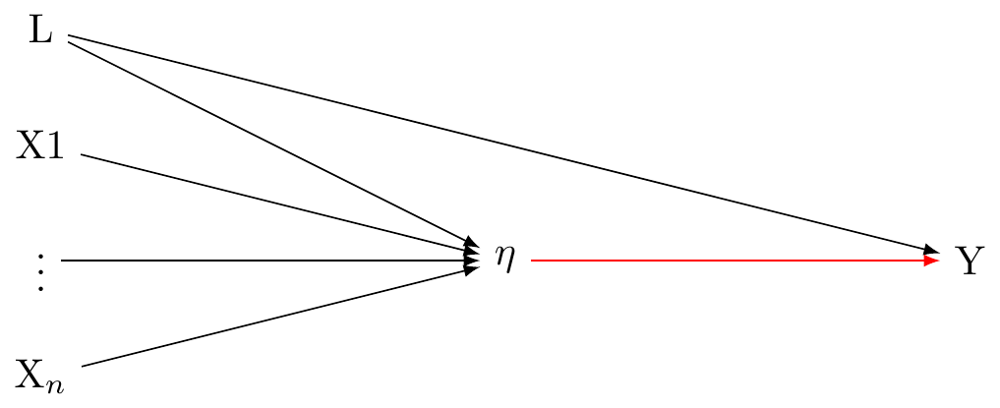

Measurement Graphs
Reflective measurement model


Formative measurement model

VanderWeele’s worry for the basic reflective model


More complex models (is this a causal graph?)
VanderWeele writes this:
Rather, I would prefer to say A$ = f(X_1, X_n)$, and to make the point we write:

VanderWeele’s model of reality (is this a causal diagramme?)

However this is not a causal graph. Can we do better?
Perhaps this is better

Reuse
MIT